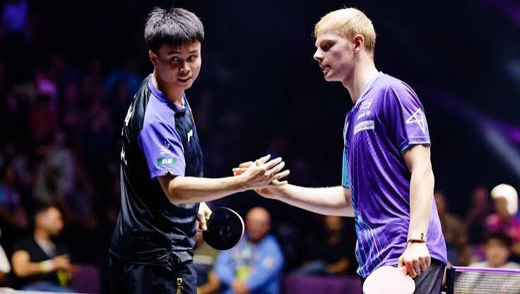
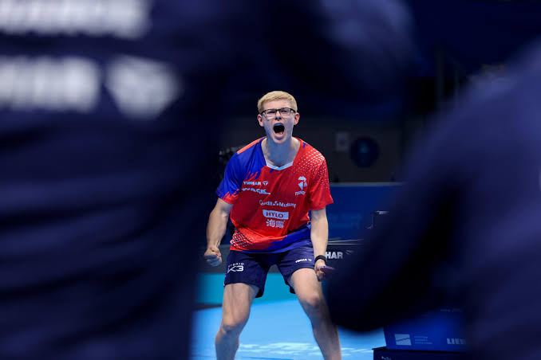
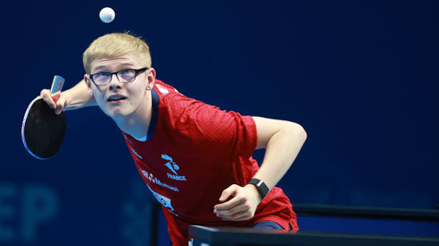
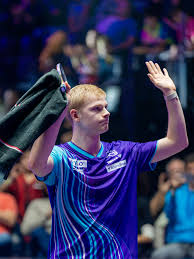
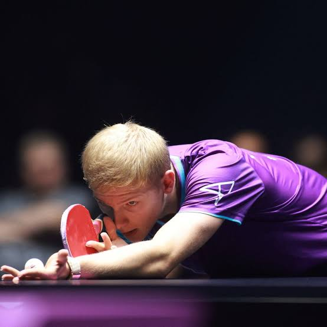
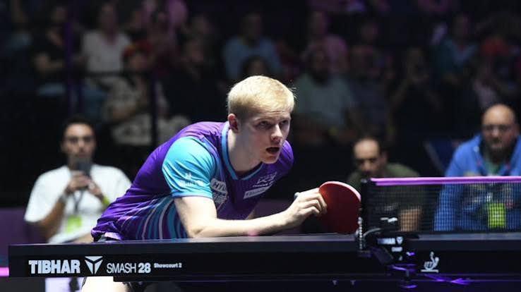
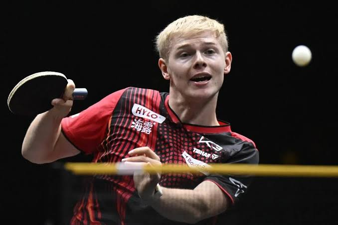

Célébrations, podiums et coulisses
Retrouvez ci-dessous une sélection des clichés les plus marquants de Félix Lebrun en action sur le circuit mondial WTT, sous le maillot de l'Équipe de France et à l'entraînement à Montpellier.








